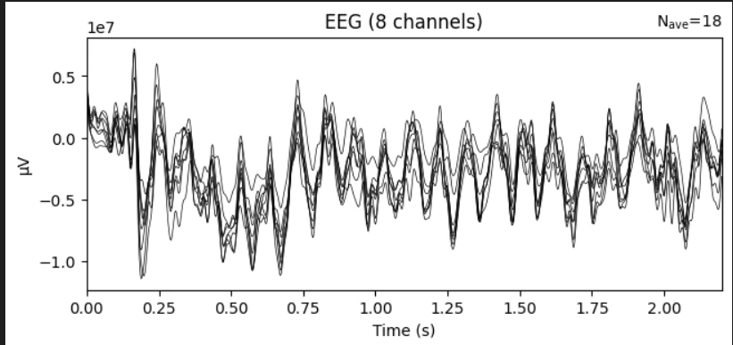
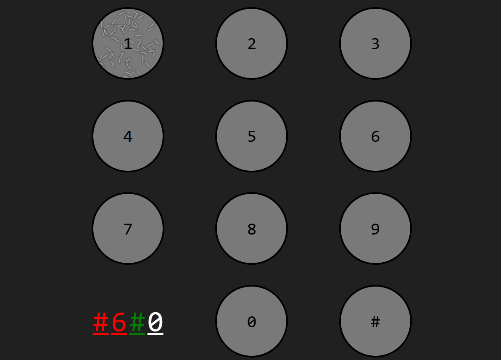

About me
Welcome! I'm Jules Gomel, a Neuro-engineer and applied researcher specializing in Brain-Computer Interfaces (BCI), EEG signal processing, and Human-Computer Interaction.
Currently conducting my PhD research at the ISAE-Supaero Neuroergonomics and Human Factors Lab (supervised by Dr. Frédéric Dehais and Dr. Marie-Constance Corsi), I bridge the gap between cognitive neuroscience and software engineering. My work aims to build robust, user-centered neuromarkers to translate complex visual information processing into functional, real-world technology.
Beyond experimental research, I am deeply committed to Open Science and quality management. I actively develop open-source analytical pipelines (Python, MNE) and standardized datasets (BIDS) to ensure reproducibility. Whether it's probing cognitive states, structuring complex organizational processes, or mentoring junior researchers, I thrive on solving multi-faceted problems.
I’m always open to collaborations, technical discussions, or consulting opportunities. Feel free to connect with me on LinkedIn, check my code on GitHub, or learn more about our lab's life on the CNE website!

Textured SSVEP : how Gabor textures enhances brain responses
For my ongoing research, I designed an EEG-based user study demonstrating how low-frequency textured Gabor flicker enhances neural entrainment for BCI control.
Committed to Open Science, the full Python analysis pipeline and the BIDS-compliant dataset are openly accessible to ensure full reproducibility.
Read the preprint here
Pre-Decision Feedback in Brain Computer Interface
My work on predictive feedback for reactive BCI was accepted and published to IEEE SMC 2025! I had the honour to present it in October 2025 in Vienna, Austria.
This research is aimed at improving BCI systems by studying the impact of feedback on user experience and performance in interactive settings.
Read the article here